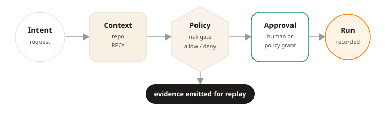

Why this exists
Agentic systems can accelerate work. They can also turn loops into hidden authority paths.
In real engineering environments, especially where security, reliability, or compliance matter, teams need more than fast output. They need to know what policy allowed an action, who or what initiated it, what approvals occurred, what evidence exists, and whether the result can be reconstructed later. Anthesis addresses that problem by making agentic loops pass through deterministic gates instead of informal automation paths.
Why the name Anthesis?
In botany, anthesis is the stage when a flower is fully open and functional.
The name reflects the project’s lifecycle metaphor: moving from latent potential into open, inspectable, functional action. For Anthesis, that means agentic work should not remain hidden inside opaque prompts or informal automation. It should open into a governed state where intent, authority, context, evidence, and outcomes can be reviewed.
What Anthesis enables
Agentic loops without weak control.
Deterministic gates before action
Consequential work can be evaluated against declared intent, context, policy, and risk before a loop proceeds.
Reviewable state transitions
Higher-risk changes and workflow steps can be routed through explicit review, approval, denial, or safe halt.
Replay-aware loop records
Execution can be linked to context, authority, gate decisions, and outcomes so teams can understand what happened and why.
Auditable control evidence
Approvals, actors, evidence, and decision lineage become durable governance artifacts rather than side effects.
Human authority with bounded agentic execution
Agents can assist aggressively inside defined boundaries while humans retain final authority over policy, exceptions, and promotion.
How it works
Anthesis governs bounded lifecycle loops rather than treating work as one opaque autonomous run. The SDLC is one important example, but the same gate model can govern agentic product, review, validation, release, and operational lifecycles.
Deterministic lifecycle gates
A loop may cover planning, implementation, review, validation, release, or product iteration. The lifecycle can vary; the state, policy, and evidence gates stay consistent.
Execution envelopes
Each governed run is wrapped in an evidence envelope that records intent, authority, context, gate decisions, activity, outcomes, and replay evidence so the result can be reviewed or re-evaluated later.
Structured role contracts
Where structured boundaries matter, Anthesis can bind role invocations through versioned contracts that define inputs, outputs, constraints, validation, and evidence requirements rather than relying on ungoverned prompt blobs.
Example Software Development Lifecycle

Controlled state transition
Every consequential action passes through intent, authority, policy, context, and evidence.

Example control path
A concrete Anthesis run should be understandable as a small sequence of deterministic gates, not a hidden autonomous session.
1. Intent
A human or agent proposes a bounded action with the context needed to judge it.
2. Gate evaluation
Anthesis evaluates scope, risk, authority, required approvals, and evidence requirements before execution.
3. Review or grant
Low-risk work may proceed under policy. Higher-risk work routes to explicit human review.
4. Execution
The action runs inside the approved boundary and records material inputs, outputs, and validation results.
5. Evidence
The result is linked to authority, approvals, context, and replay-aware records for later audit.
How Anthesis integrates
Anthesis is useful only when governed effects cannot quietly bypass it. Each integration mode must state what forces an agentic effect through the governance boundary.
Tool wrapper / invoke
Expose only anthesis.invoke or Anthesis-scoped wrappers in the agent tool registry.
MCP mediation
Expose Anthesis as the agent-facing MCP surface and broker downstream MCP servers through policy checks.
Gateway / sidecar
Force network, API, or process effects through an Anthesis-controlled boundary.
Capability tokens
Require downstream tools to reject calls without scoped, short-lived Anthesis-issued grants.
SDK wrapper
Provide an ergonomic integration path, strongest when paired with credential isolation or gateway controls.
Sandboxed runtime
Block direct filesystem, network, process, and credential effects except through governed paths.
Where it fits
Anthesis is most valuable where agentic architectures intersect with consequence and loops should move through hardened control surfaces rather than hidden side channels.
Change-making loops
Code generation and modification, documentation and specification work, and any step that can materially change repository state or delivery outcomes.
Control and approval gates
Policy checks, guardrails, approval routing, and human review gates where authority and promotability need to remain explicit.
Operational execution loops
CI/CD workflow execution, validation loops, and governed automation where actions can be fast, consequential, and difficult to reconstruct without deliberate evidence.
Evidence and replay gates
Execution evidence capture, audit, and replay of meaningful interventions where teams need to understand what happened, why it happened, and whether the system was allowed to do it.
Who it is for
Organizations that want AI leverage without weak control.
Platform engineering teams
Security engineering teams
Regulated or audit-sensitive software organizations
Teams adopting agentic architectures and lifecycle loops
Read deeper
The public materials are the concise project brief and the whitepaper. The whitepaper carries the deeper architectural and RFC-overview material.
Project brief
A concise explanation of the problem, model, and intended use cases.
Whitepaper
Longer-form technical material, including public overviews of the underlying RFC model and architecture.